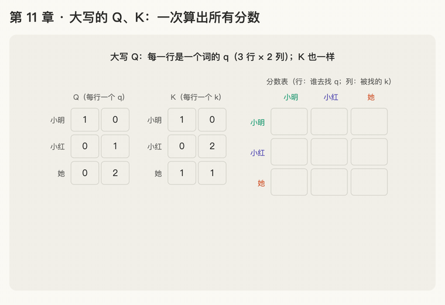

第 11 章 · 大写的 Q、K、V：一次算出所有分数
本地运行
git clone https://github.com/wikieden/transformer-visual
cd transformer-visual/code/notebooks
pip install jupyterlab torch numpy
jupyter lab ch11_matrix_qk.ipynb也可以下载后直接用 VS Code 打开 .ipynb 运行。需要 GPU 的章节在 Colab 里选「代码执行程序 → 更改运行时类型 → GPU」。
本章回答：公式里的大写 Q、K、V 是什么？\(QK^\top\) 算出来的是什么？
讲解日期：2026-10-26 · 上一章：第 10 章 转换与矩阵 · 下一章：第 12 章 转置与完整公式
对应原文：materials/text/papers/attention-is-all-you-need-1706.03762.txt§3.2.1，L170–L176（"packed together into a matrix"）
本章缩写：Q / K / V = Query（查询）/ Key（键）/ Value（值）；\(d_k\)：k = key，每个 key 向量有几个数（64）；GPU = Graphics Processing Unit（图形处理器，显卡）；CS336 = Stanford 课程 CS 336（Computer Science 336，Language Modeling from Scratch）；代码里的名字（PyTorch、nn.Linear等）见附录"PyTorch 对照"。全部缩写见 附录 · 缩写与术语表
讲解
小写 vs 大写
- 小写 \(\mathbf q\)：一个词的 query 向量
- 大写 \(Q\)：所有词的 q 排在一起，每一行是一个词的 q
一句话有 3 个词（小明、小红、她），每个 q 有 2 个数：
\(Q\) 是 3 行 × 2 列：行数 = 词数（记作 \(n\)），列数 = 每个 q 的长度（\(d_k\)）。\(K\)、\(V\) 同理。
为什么要排成矩阵：一个一个词算太慢；排成矩阵后，一次矩阵乘法就算完所有词，GPU 最擅长这个。
分数表：每个词对每个词打分
设三个词的 k：小明 [1, 0]，小红 [0, 2]，她 [1, 1]。每个词的 q 要和每个词的 k 做点积，得到一张 3 × 3 的分数表（行 = 谁去找，列 = 被找的是谁）：
| q ↓ \ k → | 小明 | 小红 | 她 |
|---|---|---|---|
| 小明 [1, 0] | 1 | 0 | 1 |
| 小红 [0, 1] | |||
| 她 [0, 2] |
例：小明那一行：[1,0]·[1,0] = 1，[1,0]·[0,2] = 0，[1,0]·[1,1] = 1。
\(QK^\top\) 算出来的就是这张表。 第 i 行第 j 列 = 第 i 个词的 q 和第 j 个词的 k 的点积。（\(^\top\) 是什么，见第 12 章。）
动画演示：一行一行填满 3 × 3 分数表

可交互版：animations/11-matrix-qk.html（要能点按钮、拖滑块，需要用本地服务打开，见 animations/README.md"跑起来看"）。
怎么看：
- Q、K 每一行是一个词；
- 小明、小红、她三行依次和每个 k 做点积，填进分数表；
- 她那一行 [0, 4, 2]：她最该看小红；
- 滑块：选一格，高亮是哪个 q 和哪个 k 做的点积。
练习与作答记录
题 0：大写 Q 和小写 q 是什么关系？
作答："每个词都有自己的，大写表示集合。" ✓（精确说法：大写 Q 是矩阵，每一行是一个词的 q）
题 1：算出"她"那一行的 3 个分数。
作答：讲解时选择跳过，直接进入下一章；留作复习题 R20（答案折叠在卡片里）。
口诀
小写一个词，大写全部词，一行一个词；
\(QK^\top\) 是分数表：行是谁去找，列是被找的，格子是 q · k；排成矩阵一次算完。
本章复习卡片
R19 大写 Q 与小写 q · R20 \(QK^\top\) 分数表（含跳过的练习）（见 ../review.md）
附录 · 延伸阅读
留给以后深入学习用，不影响本章主线。★ 是建议先读的。
- 本地论文的文本版在materials/text/papers/，表里的行号就是指这个文本版。
- CS336 handout 在cs336-spring2025/materials/text/cs336_spring2025_assignment1_basics.txt。
推荐阅读
| 读什么 | 读哪里 | 读它为了什么 |
|---|---|---|
| ★ Attention Is All You Need | §3.2.1，L170–L176 | 原文"packed together into a matrix"：所有词一起算 |
| ★ CS336 a1 handout | §3.3 Batching, Einsum and Efficient Computation | 为什么要排成矩阵、怎么用 einsum 写 \(QK^\top\) |
| Attention Is All You Need | Table 1（L263） | 分数表是 n × n，所以计算量随长度平方增长（第 23 章） |
| Dao et al. 2022, FlashAttention | §2.2 Standard Attention Implementation、Algorithm 0 | n × n 的分数表在显存里读写，是真正的速度瓶颈（阶段 E） |
数学原理
- 矩阵乘法：结果第 i 行第 j 列 = 左边第 i 行和右边第 j 列的点积。
- 分数表：\(QK^\top\) 的第 i 行第 j 列 = 第 i 个词的 q 和第 j 个词的 k 的点积，也就是"第 i 个词看第 j 个词"的分数。
- 为什么排成矩阵快：GPU 擅长一次做一大块矩阵乘法，比一个一个词循环快很多。
公式清单
| 公式 | 意思 |
|---|---|
| \(Q = XW^Q \in \mathbb{R}^{n \times d_k}\) | n 个词的 q 排成 n 行 |
| \((AB)_{ij} = \sum_k A_{ik} B_{kj}\) | 矩阵乘法 |
| \(S = QK^\top \in \mathbb{R}^{n \times n},\ S_{ij} = \mathbf q_i \cdot \mathbf k_j\) | 分数表 |
PyTorch 对照：把本章的数字用代码算一遍
代码在仓库本地
transformer-deep-dive/solutions/chapter-code/ch11_matrix_qk.py，配套测试tests/test_ch09_13.py（在线版不带代码文件，下面摘了关键几行）。Mac 上直接能跑，不需要 GPU：
bash cd transformer-deep-dive/solutions/chapter-code uv run python ch11_matrix_qk.py
讲义 ↔ 代码：
| 讲义 | 公式 / 说法 | PyTorch 写法 | 跑出来 |
|---|---|---|---|
| 大写 Q | 每一行是一个词的 q | Q.shape |
(3, 2)：n = 3、\(d_k\) = 2 |
| 一格一格算 | 第 i 行第 j 列 = \(\mathbf q_i \cdot \mathbf k_j\) | 两层 for 循环，9 次点积 | 3 × 3 分数表 |
| 一次算完 | \(QK^\top\) | Q @ K.T |
[[1, 0, 1], [0, 2, 1], [0, 4, 2]]，和循环一样 |
关键几行：
for i in range(n):
for j in range(n):
table[i, j] = Q[i] @ K[j] # 一格一格：9 次点积
Q @ K.T # 一次矩阵乘法，结果一样
代码里才看得到的：
- 循环和矩阵乘法结果一模一样，但速度差很多：循环要 Python 一格一格地算；
Q @ K.T一次交给底层，GPU 上几千格同时算。这就是"排成矩阵"的意义。 K.T是转置：先照着用，第 12 章讲为什么要转。